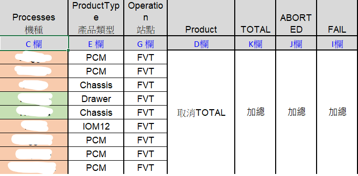
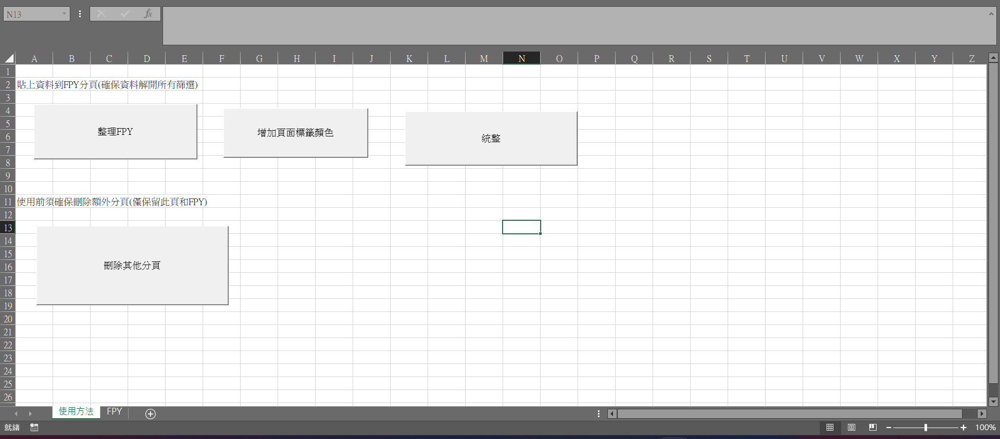
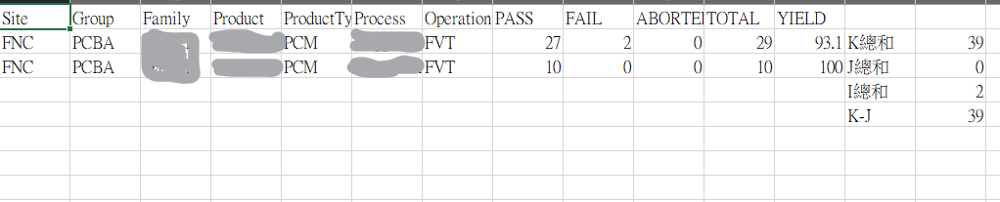
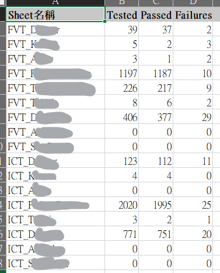

👉 把這三件事「全部自動化」




👉 不需要手動整理，系統會自動完成
原本：人工分機種慢慢篩選
現在：直接產出整理好的結果
Sub SplitDataToSheets()
Dim ws As Worksheet
Dim newWs As Worksheet
Dim lastRow As Long
Dim rng As Range
Dim sumI As Double, sumJ As Double, sumK As Double
Set ws = ThisWorkbook.Sheets("FPY")
'原始資料sheet
lastRow = ws.Cells(ws.Rows.Count, "A").End(xlUp).Row
'=====ICT=====
Call CreateSheetData(ws, "機種S", "PCM", "ICT", "ICT_Sandhawk")
Call CreateSheetData(ws, "機種A", "PCM", "ICT", "ICT_Arapaho")
Call CreateSheetData(ws, "機種D", "PCM", "ICT", "ICT_Dagger2")
Call CreateSheetData(ws, "機種T", "IOM12", "ICT", "ICT_Tahiti")
Call CreateSheetData(ws, "機種T", "Drawer", "ICT", "ICT_Fisher Drawer")
Call CreateSheetData(ws, "機種A", "PCM", "ICT", "ICT_Alder")
Call CreateSheetData(ws, "機種K", "PCM", "ICT", "ICT_Katana")
Call CreateSheetData(ws, "機種D", "PCM", "ICT", "ICT_Dagger")
'=====FVT=====
Call CreateSheetData(ws, "機種S", "PCM", "FVT", "FVT_Sandhawk")
Call CreateSheetData(ws, "機種A", "PCM", "FVT", "FVT_Arapaho")
Call CreateSheetData(ws, "機種D", "PCM", "FVT", "FVT_Dagger2")
Call CreateSheetData(ws, "機種T", "IOM12", "FVT", "FVT_Tahiti")
Call CreateSheetData(ws, "機種T", "Chassis", "FVT", "FVT_Trafford_Fisher")
Call CreateSheetData(ws, "機種T", "Drawer", "FVT", "FVT_Fisher_Drawer")
Call CreateSheetData(ws, "機種A", "Chassis", "FVT", "FVT_Alder")
Call CreateSheetData(ws, "機種K", "PCM", "FVT", "FVT_Katana")
Call CreateSheetData(ws, "機種D", "PCM", "FVT", "FVT_Dagger")
End Sub
Sub CreateSheetData(ws As Worksheet, Cvalue As String, Evalue As String, Gvalue As String, sheetName As String)
Dim newWs As Worksheet
Dim lastRow As Long
Dim pasteRow As Long
Dim i As Long
Dim sumI As Double, sumJ As Double, sumK As Double
'刪除舊sheet
On Error Resume Next
Application.DisplayAlerts = False
Worksheets(sheetName).Delete
Application.DisplayAlerts = True
On Error GoTo 0
'建立新sheet
Set newWs = Worksheets.Add
newWs.Name = sheetName
'標題複製
ws.Rows(1).Copy Destination:=newWs.Rows(1)
lastRow = ws.Cells(ws.Rows.Count, "A").End(xlUp).Row
pasteRow = 2
'====篩選條件====
For i = 2 To lastRow
If ws.Cells(i, 3).Value = Cvalue _
And ws.Cells(i, 5).Value = Evalue _
And ws.Cells(i, 7).Value = Gvalue _
And ws.Cells(i, 4).Value <> "TOTAL" Then
ws.Rows(i).Copy Destination:=newWs.Rows(pasteRow)
pasteRow = pasteRow + 1
'====計算總和====
If IsNumeric(ws.Cells(i, 11).Value) Then
sumK = sumK + ws.Cells(i, 11).Value
End If
If IsNumeric(ws.Cells(i, 10).Value) Then
sumJ = sumJ + ws.Cells(i, 10).Value
End If
If IsNumeric(ws.Cells(i, 9).Value) Then
sumI = sumI + ws.Cells(i, 9).Value
End If
End If
Next i
'====填入統計結果====
newWs.Cells(2, 13).Value = "K總和"
newWs.Cells(2, 14).Value = sumK
newWs.Cells(3, 13).Value = "J總和"
newWs.Cells(3, 14).Value = sumJ
newWs.Cells(4, 13).Value = "I總和"
newWs.Cells(4, 14).Value = sumI
newWs.Cells(5, 13).Value = "K-J"
newWs.Cells(5, 14).Value = sumK - sumJ
End Sub
Sub SetSheetTabColor()
Dim ws As Worksheet
For Each ws In ThisWorkbook.Worksheets
'FVT
If InStr(1, ws.Name, "FVT", vbTextCompare) > 0 Then
ws.Tab.Color = RGB(255, 255, 204)
'ICT
ElseIf InStr(1, ws.Name, "ICT", vbTextCompare) > 0 Then
ws.Tab.Color = RGB(204, 255, 255)
'其他 → 不上色
Else
ws.Tab.ColorIndex = xlColorIndexNone
End If
Next ws
MsgBox "分頁標籤顏色已完成", vbInformation
End Sub
Sub CreateSummaryTable()
Dim ws As Worksheet
Dim sumWs As Worksheet
Dim lastRow As Long
Dim r As Long
Dim valI As Double, valJ As Double, valK As Double
'===== 刪除舊 Summary =====
On Error Resume Next
Application.DisplayAlerts = False
Worksheets("Summary").Delete
Application.DisplayAlerts = True
On Error GoTo 0
'===== 建立 Summary =====
Set sumWs = Worksheets.Add
sumWs.Name = "Summary"
'===== 標題 =====
sumWs.Cells(1, 1).Value = "Sheet名稱"
sumWs.Cells(1, 2).Value = "Tested"
sumWs.Cells(1, 3).Value = "Passed"
sumWs.Cells(1, 4).Value = "Failures"
r = 2
'===== 掃所有分頁 =====
For Each ws In ThisWorkbook.Worksheets
'跳過 主頁 / 原始資料 / Summary
If ws.Name <> "使用方法" And ws.Name <> "FPY" And ws.Name <> "Summary" Then
lastRow = ws.Cells(ws.Rows.Count, "A").End(xlUp).Row
On Error Resume Next
valK = ws.Cells(2, 14).Value ' K總和
valJ = ws.Cells(3, 14).Value ' J總和
valI = ws.Cells(4, 14).Value ' I總和
On Error GoTo 0
'寫入 Summary
sumWs.Cells(r, 1).Value = ws.Name
sumWs.Cells(r, 2).Value = valK - valJ
sumWs.Cells(r, 3).Value = valK - valJ - valI
sumWs.Cells(r, 4).Value = valI
r = r + 1
End If
Next ws
'===== 美化 =====
sumWs.Columns("A:D").AutoFit
'標題上色
sumWs.Rows(1).Font.Bold = True
sumWs.Rows(1).Interior.Color = RGB(200, 200, 200)
MsgBox "Summary彙整完成", vbInformation
End Sub
Sub DeleteExtraSheets_KeepFPY()
Dim ws As Worksheet
Application.DisplayAlerts = False
Application.ScreenUpdating = False
For Each ws In ThisWorkbook.Worksheets
'只保留「使用方法」和「FPY」
If ws.Name <> "使用方法" And ws.Name <> "FPY" Then
ws.Delete
End If
Next ws
Application.DisplayAlerts = True
Application.ScreenUpdating = True
MsgBox "已刪除其他分頁", vbInformation
End Sub